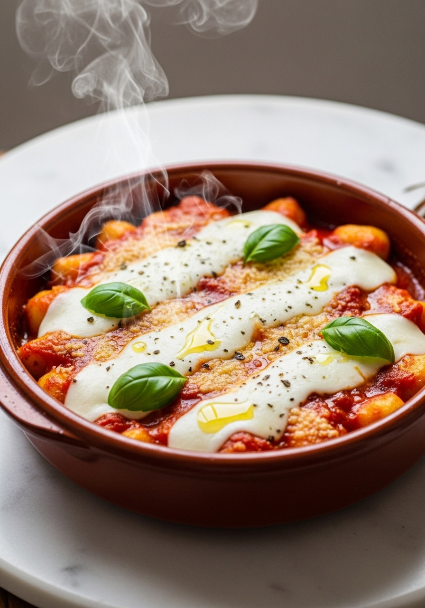
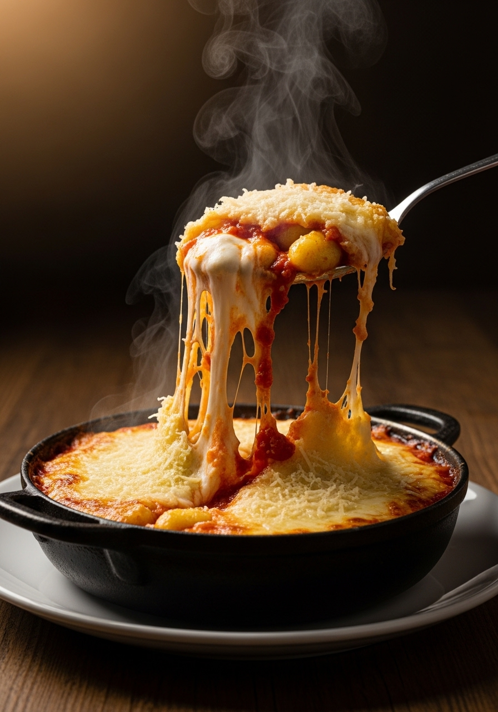

Gli gnocchi alla sorrentina sono il piatto simbolo della costa amalfitana e della Penisola Sorrentina: morbidi gnocchi di patate, sugo di pomodoro San Marzano profumato di basilico, mozzarella di bufala (o fior di latte) che fonde in fili lunghissimi, e Parmigiano Reggiano gratinato in superficie. Si comincia sul fornello e si finisce in forno — la mantecatura finale trasforma il piatto da buono a straordinario. Il segreto è l'equilibrio tra la dolcezza del pomodoro campano, la grassezza della mozzarella e la sapidità del Parmigiano. Questo è comfort food italiano al massimo livello.

SorrentinaGli gnocchi alla sorrentina nascono nella Penisola Sorrentina, in Campania, in una delle zone d'Italia con la concentrazione più alta di ingredienti di qualità straordinaria: il pomodoro San Marzano (coltivato alle pendici del Vesuvio, con la sua dolcezza unica), la mozzarella di bufala campana (la più ricca e cremosa del mondo), il basilico napoletano profumato. La ricetta è semplice per necessità storica — era il piatto della cucina povera campana, fatto con quello che c'era. La fortuna di Sorrento è stata quella di avere intorno a sé i migliori prodotti d'Italia per fare qualcosa di così semplice diventare così buono.
Per gli gnocchi alla sorrentina, i gnocchi freschi di patate danno la consistenza migliore — morbidi dentro, con una leggera crosta fuori dopo il passaggio in forno. Gli gnocchi secchi confezionati funzionano altrettanto bene e sono più pratici. Per la mozzarella: la bufala campana DOP è la scelta tradizionale e la più saporita, ma contiene più acqua — va sgocciolata a lungo. Il fior di latte (mozzarella di latte vaccino) è meno saporito ma fonde meglio e rilascia meno liquidi: ottima alternativa pratica. Per una versione di lusso, usa la burrata al posto della mozzarella — il suo cuore cremoso si scioglie nel sugo caldo in modo spettacolare.
Ingredienti
Procedimento

Gli gnocchi alla sorrentina si conservano in frigorifero per 2-3 giorni (nella teglia, coperta con pellicola). Per riscaldarli: forno a 180°C per 15-20 minuti coperti con stagnola, poi 5 minuti senza per ridorare la superficie. Non usare il microonde: la mozzarella diventa gommosa. Per una variante più ricca, aggiungi ricotta fresca mescolata al sugo prima di infornare: il piatto diventa cremoso e rotondo. Per una versione di carne, aggiungi polpettine di maiale nel sugo come vuole la tradizione napoletana domenicale. Gli avanzi del sugo alla sorrentina sono eccellenti come condimento per la pasta il giorno successivo.
Sì — gli gnocchi confezionati freschi (trovati nel banco frigo) sono ottimi per questa ricetta. Gli gnocchi secchi funzionano bene. Per i gnocchi freschi fatti in casa consulta la nostra ricetta degli gnocchi di patate. La differenza principale è la consistenza: gli gnocchi fatti in casa sono più morbidi e leggeri, quelli confezionati tendono ad essere più compatti.
Quasi sempre per due ragioni: la mozzarella non è stata sgocciolata abbastanza (metti la mozzarella su carta cucina per almeno 30 minuti) oppure il sugo era troppo liquido. Usa una passata densa o cuoci il sugo più a lungo per addensarlo. Anche cuocere gli gnocchi troppo in acqua prima del forno contribuisce all'acquosità.
Sì — assembla la teglia, coprila con pellicola e conserva in frigorifero per 12-24 ore prima di infornarla. Al momento di cuocere, aggiungi 5-10 minuti di cottura poiché gli ingredienti sono freddi. Questa è una delle ragioni per cui è un ottimo piatto da portare a casa di altri: si prepara tutto il giorno prima e si inforna all'arrivo.
Sì, ma la qualità fa la differenza. Scegli una passata di San Marzano DOP o una marca di qualità. Evita le salse già aromatizzate — aggiungi tu aglio e basilico freschi per il sapore autentico. Cuoci comunque la salsa compraia per 10-15 minuti con aglio e olio prima di usarla: anche la passata migliora con una breve cottura.
Gli gnocchi alla sorrentina si distinguono per il sugo di San Marzano (la dolcezza del pomodoro campano è caratteristica), la mozzarella di bufala campana, e la passata in forno per la gratinatura. I 'gnocchi al forno' generici possono usare qualsiasi sugo e qualsiasi formaggio. La combinazione San Marzano + bufala campana + gnocchi di patate è la firma del piatto sorrentino.